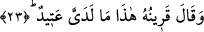

Eğer perde aradan kaldırılsa,
Bu yakîn zerre kadar çoğalmaz.
Yani âhiretteki hicab ehlinde bulunan yakîn gözü dünyada keşif ehlinde bulunur. Onlar
bu dünyada ilme’l-yakîn’den ayne’l-yakîne yükselmişlerdir. O an cennettelermiş ve her
günleri yevm-i mezîd; amellerin arttırıldığı günmüş gibi vakitleri hoş olmuştur. Burada
büyük bir sır vardır. O da şudur: Cehennem ehlinin gözlerinden yakîn ve hakkı
görmelerini engelleyen örtüleri kaldırılır. Bu onların sırtları ve karınları uzun süre
yandıktan sonra olur. O zaman bunun bu dünyada ariflerin görmüş oldukları cemalin
eseri olduğunu anlarlar. İşte o zaman azap için bir çekince kalmaz, zira ateş şâhid
olanlar içindir. Sen ellerini kesen kadınların Yusuf’u gördüklerinden dolayı o kesmeyi
hissetmediklerini bilmiyor musun? Fakat bil ki cehennem ehli için yemek, içmek ve
nikâh gibi nimetler yoktur.
23. Yanındaki arkadaşı: «İşte yanımdaki hazır, der.
“Yanındaki arkadaşı” yani ona bağlanan, beraber oturduğu şeytan ona işâret ederek
“işte yanımdaki hazırdır, der.” Yani işte bu yanımdaki, kontrolüm ve kudretim altındaki
kişi cehennem için hazırdır. Ben onu yoldan çıkarmak suretiyle cehennem için
hazırladım. Şöyle de denmiştir: Vekil kılınmış yani daha önce bahsi geçen gözetleyici
melek, amel defterindekine işâret ederek “bu yanımda yazılıdır ve arz edilmek üzere
hazırdır” der. Eğer kul iman ve cennet ehlinden ise iyiliklerinin kitabı getirilir. Çünkü
kötülükleri için keffaret olmuştur. Şâyet küfür ve cehennem ehlinden olursa
kötülüklerinin kitabı getirilir. Çünkü iyilikleri küfrü ile boşa gitmiştir. Dolayısıyla akıllı
bir kimsenin her yerde ve zamanda şeytana itâat etmemesi ve onun yoldan çıkarmalarına
aldanmaması gerekir. Zira o ateşe ve Cebbar olanın kahretmesine dâvet eder.
Miraç gecesi Hz. Peygamber’in (s.a.) yürürken yolda yaşlı birisini gördüğü ve “bu
nedir ya Cibrîl” dediği rivâyet edilir. Cebrail (a.s.) “yürü ey Muhammed” demiştir.
Allah’ın dilediği kadar yürüdü ve aniden “hadi ya Muhammed” diyerek yoldan çekilen
biriyle karşılaştı. Hz. Peygamber (s.a.) bir topluluğun yanından geçti. Ona selam
verdiler ve “ey ilk sana selam olsun. Ey son sana selam olsun” dediler. Cebrail (a.s.)
“selamlarına karşılık ver” dedi. Hz. Peygamber karşılık verdi ve ardından Cebrail (a.s.)
“yaşlı olan kişi dünyadır. Dünyadan geriye o yaşlının ömründen kalan yıllardan başka
bir şey kalmaz. Eğer sen ona cevap verseydin ümmetin dünyayı âhirete tercih edecekti.
Seni dâvet eden kişi ise İblis’ti. Sana selâm verenler ise İbrahim, Mûsâ ve Îsâ (a.s.)
idi” demiştir.
Bâzı ârifler “Allah, İblis’i düşmanı dosttan, şakî olanı saîdden ayırmak için